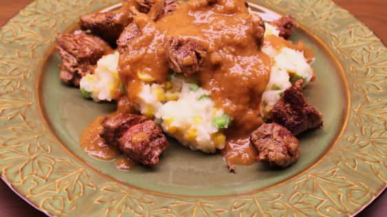

<!-- Page-one of recipe-->
<main>
    <div id="header">
        <h1>Nyama na Irio</h1>
        <a href="../index.html">Return Home</a>
    </div>
    
    <div>
        <h3>A popular Kenyan Meal</h3>
        <p>A scrumptous meal for four.</p>
    </div>
    <div>
        <h4>Ingredients</h4>
        <ul>
            <li>12 ounces of peas</li>
            <li>12 ounces of corn</li>
            <li>4 cups mashed potatoes</li>
            <li>3 tablespoons butter</li>
            <li>3 tablespoons salt</li>
            <li>3 tablespoons pepper</li>
            <li>3 tablespoons olive oil</li>
            <li>3 pounds beef tendorloin, cubed</li>
            <li>6 tablespoons flour</li>
            <li>2 cups beef broth</li>
        </ul>
    </div>
    <div>
        <h4>Recipe Instructions</h4>
        <ol>
            <li>Mix together mashed potatoes with corn, peas, butter, salt and pepper.</li>
            <li>Sauté meat in oil until browned.</li>
            <li>Remove steak and add flour to the oil. Make a light brown roux.</li>
            <li>Add beef broth and simmer for 5 minutes.</li>
            <li>Place a mound of potatoes on the plate and cover with steak and gravy.</li>
        </ol>
    </div>
    <div>
        <a href="#header">Return to Top</a>
    </div>
</main>